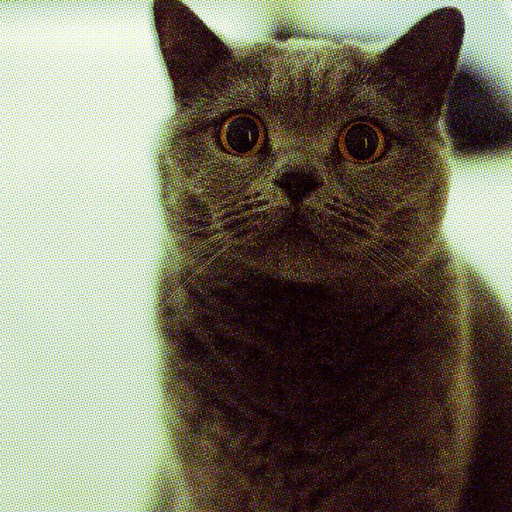
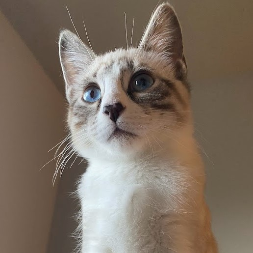

About
Hi, my name is Sophia. I am Computer Science student at Western Washington University. My goal with this website is to practice web development and log stuff for fun.
Website History
This is the second iteration of this website. The first prototype was ugly and poorly structured(using tables...) so I restarted with what I learned(flex boxes).
This website is inspired by early internet's simple web design. I used early 2000's web templates as reference but using newer web dev techniques.
Honestly, I was inspired to make this website after finding Paul Nylander's bugman123.com website. I found his website after searching for cool pictures of fractals and hyperbolic art.
Interests
I took an AP Comp Sci class in highschool which grew my interest in coding. I continued to take CS classes in community college and then a UX Design class. To be honest, I like the design/frontend aspect of development rather than back end, data structures, algorithm, blah blah. But, I still have to learn it for my Computer Science major.
I also enjoy photography. I have a side hustle of real estate photography and occasionally portraits. I also enjoy film photography. I have too many cameras.
Also, in my free time, I enjoy playing video games. My favorite games are the Half Life series, Portal series, Mass Effect 2, and of course Minecraft.
Pets
This is Mura, our oldest cat. She likes licking ice cream, eating grass, and watching birds. She was born Sept. 2019.
Sputnik is named after the soviet satellite. He is often seen looking silly and sprinting full speed at Mura. He was born Sept. 2021.